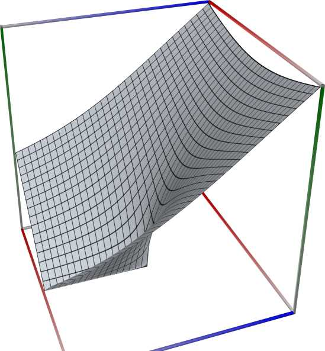
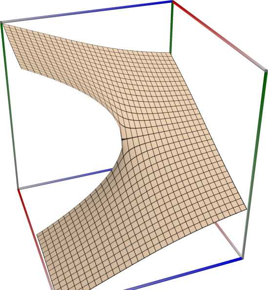
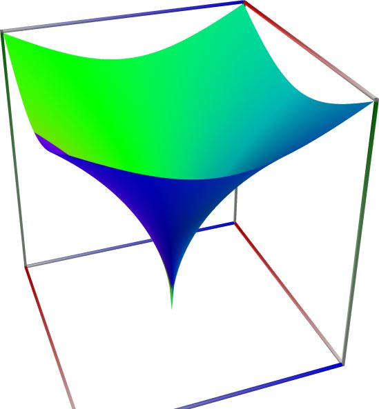

Roots and quadratic, cubic, and quartic equations#
Square root, \(\mathrm{sqrt}(x) = \sqrt{x}\)#
- ctx.sqrt(x)#
where
ctxismath53,mathc53,ctxcpp,ctxflint.Returns the principal square root of \(x\), \(\sqrt x\). See also Wikipedia [1244], MathWorld [856], Flint [744], Ehrhardt [297] (4.1.19), Mpmath [558].
For positive real numbers, the principal root is simply the positive square root. For arbitrary complex numbers, the principal square root is defined to satisfy \(\sqrt x = \exp(\log(x)/2)\). The function thus has a branch cut along the negative half real axis.

\(\quad\)
\(\quad\)
3D wpf plot: real part (left figure), imaginary part (middle figure) and absolute value with color-coded phase (right figure) of the complex sine function \(z = \sin(x + iy)\), with \(-6 \le x \le 6\) (blue axis), \(-6 \le y \le 6\) (red axis), \(-10 \le z \le 10\) (green axis). Function values are loglog-transformed.
An example with real input:
>>> from xlcalcnet import * >>> x = -5.1; dps = 90 >>> for ctx in gui.ctxlist_real: print(ctx.fmtname + ': ' + ctx.fmt(ctx.sqrt(x))) fpm: 2.25831795812724 mpm: 2.25831795812724298497204998596911539535997040397390263906946027328814033106057631953496688 dpm: 2.25831795812724298497204998596911539535997040397390263906946027328814033106057631953496688 ipm: [2.2583179581272429849720499859691153953599704039739026390694602732881403310605763195349668820745, 2.2583179581272429849720499859691153953599704039739026390694602732881403310605763195349668825654] gpm: 2.2583179581272429849720499859691153953599704039739026390694602732881403310605763195349668826 apm: [2.25831795812724298497204998596911539535997040397390263906946027328814033106057631953496688 +/- 2.79e-90] math53: 2.25831795812724 sreal: 2.258318 dreal: 2.25831795812724 ereal: 2.2583179581272429849 qreal: 2.25831795812724298497204998596912 oreal: 2.2583179581272429849720499859691153953599704039739026390694602732881403 mreal: 2.25831795812724298497204998596911539535997040397390263906946027328814033106057631953496688 sflint: 2.258318 dflint: 2.25831795812724 eflint: 2.2583179581272429849 qflint: 2.25831795812724298497204998596912 oflint: 2.2583179581272429849720499859691153953599704039739026390694602732881403 mflint: 2.25831795812724298497204998596911539535997040397390263906946027328814033106057631953496688 aflint: [2.25831795812724298497204998596911539535997040397390263906946027328814033106057631953496688 +/- 3.73e-90]
An example with complex input, using C#-style formatting for complex numbers for the result
>>> from xlcalcnet import * >>> x = -5.1+2j; gui.setdps(40) >>> for ctx in [fpm, mpm, cmath53, qcplx]: print(ctx.fmtname + ': ' + ctx.fmt(ctx.sqrt(x))) fpm: (0.434820865369255, 2.29979764000237) mpm: (0.4348208653692547343560309119079660096415, 2.299797640002369328271076189836643191788) cmath53: (0.434820865369255, 2.29979764000237) qcplx: (0.434820865369254734356030911907966, 2.29979764000236932827107618983664)
An example with the same complex input as above, showing only the real part of the result:
>>> from xlcalcnet import * >>> x = -5.1+2j; gui.setdps(90) >>> for ctx in gui.ctxlist_cplx: print(ctx.fmtname + ': ' + ctx.realctx.fmt(ctx.real(ctx.sqrt(x)))) fpm: 0.434820865369255 mpm: 0.434820865369254734356030911907966009641496430039831655959511936242419788626030484795959202 dpm: 0.434820865369254734356030911907966009641496430039831655959511936242419788626030484795959202 ipm: [0.43482086536925473435603091190796600964149643003983165595951193624241978862603048479595920207246, 0.43482086536925473435603091190796600964149643003983165595951193624241978862603048479595920219519] gpm: 0.43482086536925473435603091190796600964149643003983165595951193624241978862603048479595920213 apm: [0.434820865369254734356030911907966009641496430039831655959511936242419788626030484795959202 +/- 2.42e-91] cmath53: 0.434820865369255 scplx: 0.4348209 dcplx: 0.434820865369255 ecplx: 0.43482086536925473435 qcplx: 0.434820865369254734356030911907966 ocplx: 0.43482086536925473435603091190796600964149643003983165595951193624241979 mcplx: 0.434820865369254734356030911907966009641496430039831655959511936242419788626030484795959202 sflintc: 0.4348209 dflintc: 0.434820865369255 eflintc: 0.43482086536925473435 qflintc: 0.434820865369254734356030911907966 oflintc: 0.43482086536925473435603091190796600964149643003983165595951193624241979 mflintc: 0.434820865369254734356030911907966009641496430039831655959511936242419788626030484795959202 aflintc: [0.434820865369254734356030911907966009641496430039831655959511936242419788626030484795959202 +/- 3.56e-91]
An example with the same complex input as above, showing only the imaginary part of the result:
>>> from xlcalcnet import * >>> x = -5.1+2j; gui.setdps(90) >>> for ctx in gui.ctxlist_cplx: print(ctx.fmtname + ': ' + ctx.realctx.fmt(ctx.imag(ctx.sqrt(x)))) fpm: 2.29979764000237 mpm: 2.29979764000236932827107618983664319178760085152712178173814937190693948300231699076102248 dpm: 2.29979764000236932827107618983664319178760085152712178173814937190693948300231699076102248 ipm: [2.299797640002369328271076189836643191787600851527121781738149371906939483002316990761022476236, 2.2997976400023693282710761898366431917876008515271217817381493719069394830023169907610224767269] gpm: 2.2997976400023693282710761898366431917876008515271217817381493719069394830023169907610224767 apm: [2.29979764000236932827107618983664319178760085152712178173814937190693948300231699076102248 +/- 4.50e-90] cmath53: 2.29979764000237 scplx: 2.299798 dcplx: 2.29979764000237 ecplx: 2.2997976400023693283 qcplx: 2.29979764000236932827107618983664 ocplx: 2.2997976400023693282710761898366431917876008515271217817381493719069395 mcplx: 2.29979764000236932827107618983664319178760085152712178173814937190693948300231699076102248 sflintc: 2.299798 dflintc: 2.29979764000237 eflintc: 2.2997976400023693283 qflintc: 2.29979764000236932827107618983664 oflintc: 2.2997976400023693282710761898366431917876008515271217817381493719069395 mflintc: 2.29979764000236932827107618983664319178760085152712178173814937190693948300231699076102248 aflintc: [2.29979764000236932827107618983664319178760085152712178173814937190693948300231699076102247 +/- 7.05e-90]


Reciprocal square root, \(\mathrm{rsqrt}(x) = 1/\sqrt{x}\)#
- ctx.rsqrt(x)#
where
ctxismath53,mathc53,ctxcpp,ctxflint.Returns the reciprocal of the principal square root of \(x\), \(1/\sqrt x\). See also Wikipedia [1244], MathWorld [856], Flint [744], Ehrhardt [297] (4.1.19), Mpmath [558].
An example with real input:
>>> from xlcalcnet import * >>> x = 5.1; dps = 90 >>> for ctx in gui.ctxlist_real: print(ctx.fmtname + ': ' + ctx.fmt(ctx.rsqrt(x))) fpm: 0.442807442770048 mpm: 0.442807442770047644112166663915512822619602039994882870405776524174145162953054180300973898 dpm: 0.442807442770047644112166663915512822619602039994882870405776524174145162953054180300973899 ipm: [0.44280744277004764411216666391551282261960203999488287040577652417414516295305418030097389841589, 0.44280744277004764411216666391551282261960203999488287040577652417414516295305418030097389853862] gpm: 0.44280744277004764411216666391551282261960203999488287040577652417414516295305418030097389842 apm: [0.442807442770047644112166663915512822619602039994882870405776524174145162953054180300973898 +/- 5.82e-91] math53: 0.442807442770048 sreal: 0.4428074 dreal: 0.442807442770048 ereal: 0.44280744277004764414 qreal: 0.442807442770047644112166663915513 oreal: 0.44280744277004764411216666391551282261960203999488287040577652417414516 mreal: 0.442807442770047644112166663915512822619602039994882870405776524174145162953054180300973899 sflint: 0.4428074 dflint: 0.442807442770048 eflint: 0.44280744277004764411 qflint: 0.442807442770047644112166663915513 oflint: 0.44280744277004764411216666391551282261960203999488287040577652417414516 mflint: 0.442807442770047644112166663915512822619602039994882870405776524174145162953054180300973899 aflint: [0.442807442770047644112166663915512822619602039994882870405776524174145162953054180300973898 +/- 6.35e-91]
An example with complex input, using C#-style formatting for complex numbers for the result
>>> from xlcalcnet import * >>> x = -5.1+2j; gui.setdps(40) >>> for ctx in [fpm, mpm, cmath53, qcplx]: print(ctx.fmtname + ': ' + ctx.fmt(ctx.rsqrt(x))) fpm: (0.0793738376081819, -0.419813718585491) mpm: (0.07937383760818192306985653878516027105643, -0.4198137185854912710061496298561416960147) cmath53: (0.0793738376081819, -0.419813718585491) qcplx: (0.0793738376081819230698565387851603, -0.419813718585491271006149629856142)
An example with the same complex input as above, showing only the real part of the result:
>>> from xlcalcnet import * >>> x = -5.1+2j; gui.setdps(90) >>> for ctx in gui.ctxlist_cplx: print(ctx.fmtname + ': ' + ctx.realctx.fmt(ctx.real(ctx.rsqrt(x)))) fpm: 0.0793738376081819 mpm: 0.0793738376081819230698565387851602710564335191553182978368139909689282920363838223613013336 dpm: 0.0793738376081819230698565387851602710564335191553182978368139909689282920363838223613013336 ipm: [0.07937383760818192306985653878516027105643351915531829783681399096892829203638382236130133360501, 0.079373837608181923069856538785160271056433519155318297836813990968928292036383822361301333681715] gpm: 0.07937383760818192306985653878516027105643351915531829783681399096892829203638382236130133362 apm: [0.0793738376081819230698565387851602710564335191553182978368139909689282920363838223613013336 +/- 7.24e-92] cmath53: 0.0793738376081819 scplx: 0.07937385 dcplx: 0.0793738376081819 ecplx: 0.079373837608181923066 qcplx: 0.0793738376081819230698565387851603 ocplx: 0.079373837608181923069856538785160271056433519155318297836813990968928293 mcplx: 0.0793738376081819230698565387851602710564335191553182978368139909689282920363838223613013337 sflintc: 0.07937384 dflintc: 0.0793738376081819 eflintc: 0.079373837608181923073 qflintc: 0.0793738376081819230698565387851603 oflintc: 0.079373837608181923069856538785160271056433519155318297836813990968928292 mflintc: 0.0793738376081819230698565387851602710564335191553182978368139909689282920363838223613013337 aflintc: [0.079373837608181923069856538785160271056433519155318297836813990968928292036383822361301334 +/- 6.01e-91]
An example with the same complex input as above, showing only the imaginary part of the result:
>>> from xlcalcnet import * >>> x = -5.1+2j; gui.setdps(90) >>> for ctx in gui.ctxlist_cplx: print(ctx.fmtname + ': ' + ctx.realctx.fmt(ctx.imag(ctx.rsqrt(x)))) fpm: -0.419813718585491 mpm: -0.419813718585491271006149629856141696014653688865977487463631645091977039005793989419298002 dpm: -0.419813718585491271006149629856141696014653688865977487463631645091977039005793989419298002 ipm: [-0.41981371858549127100614962985614169601465368886597748746363164509197703900579398941929800202969, -0.41981371858549127100614962985614169601465368886597748746363164509197703900579398941929800166151] gpm: -0.41981371858549127100614962985614169601465368886597748746363164509197703900579398941929800178 apm: [-0.419813718585491271006149629856141696014653688865977487463631645091977039005793989419298002 +/- 4.06e-91] cmath53: -0.419813718585491 scplx: -0.4198137 dcplx: -0.419813718585491 ecplx: -0.419813718585491271 qcplx: -0.419813718585491271006149629856142 ocplx: -0.41981371858549127100614962985614169601465368886597748746363164509197704 mcplx: -0.419813718585491271006149629856141696014653688865977487463631645091977039005793989419298002 sflintc: -0.4198137 dflintc: -0.419813718585491 eflintc: -0.419813718585491271 qflintc: -0.419813718585491271006149629856142 oflintc: -0.41981371858549127100614962985614169601465368886597748746363164509197704 mflintc: -0.419813718585491271006149629856141696014653688865977487463631645091977039005793989419298002 aflintc: [-0.41981371858549127100614962985614169601465368886597748746363164509197703900579398941929800 +/- 2.95e-90]
Auxiliary function \(\mathrm{sqrt1pm1}(x) = \sqrt{1+x}-1\)#
- ctx.sqrt1pm1(x)#
where
ctxismath53,mathc53,ctxcpp,ctxboostorctxflint.Returns \(\sqrt{1+x}-1\), accurate also for \(x\) near 0. See also Wikipedia [1244], MathWorld [856], BoostMath [92].
This is calculated as \(\mathrm{sqrt1pm1}(v) = \mathrm{expm1}(\mathrm{logp1}(v)/2)\). See log1p() and expm1().
An example with real input:
>>> from xlcalcnet import * >>> x = 5.1; gui.setdps(90) >>> for ctx in gui.ctxlist_real: print(ctx.fmtname + ': ' + ctx.fmt(ctx.sqrt1pm1(x))) fpm: 1.46981780704569 mpm: 1.46981780704569380590709946162877517919414492582021285822843909030286721110584522284490036 dpm: 1.46981780704569380590709946162877517919414492582021285822843909030286721110584522284490036 ipm: [1.4698178070456938059070994616287751791941449258202128582284390903028672111058452228449003609601, 1.4698178070456938059070994616287751791941449258202128582284390903028672111058452228449003616965] gpm: 1.4698178070456938059070994616287751791941449258202128582284390903028672111058452228449003615 apm: [1.46981780704569380590709946162877517919414492582021285822843909030286721110584522284490036 +/- 1.71e-90] math53: 1.46981780704569 sreal: 1.469818 dreal: 1.46981780704569 ereal: 1.469817807045693806 qreal: 1.46981780704569380590709946162878 oreal: 1.4698178070456938059070994616287751791941449258202128582284390903028672 mreal: 1.7213006207263159147253966461812387691714521524548593104424419942738540930238394510926163 sflint: 1.469818 dflint: 1.46981780704569 eflint: 1.4698178070456938059 qflint: 1.46981780704569380590709946162878 oflint: 1.4698178070456938059070994616287751791941449258202128582284390903028672 mflint: 1.7213006207263159147253966461812387691714521524548593104424419942738540930238394510926163 aflint: [1.72130062072631591472539664618123876917145215245485931044244199427385409302383945109261630 +/- 4.95e-90]
An example with complex input, using C#-style formatting for complex numbers for the result
>>> from xlcalcnet import * >>> x = -5.1+2j; gui.setdps(40) >>> for ctx in [fpm, mpm, cmath53, qcplx]: print(ctx.fmtname + ': ' + ctx.fmt(ctx.sqrt1pm1(x))) fpm: (-0.519480546084335, 2.08108119629951) mpm: (-0.5194805460843352044067881583029227066133, 2.081081196299512169338814305368775287692) cmath53: (-0.519480546084335, 2.08108119629951) qcplx: (-0.519480546084335204406788158302922, 2.08108119629951216933881430536877)
An example with the same complex input as above, showing only the real part of the result:
>>> from xlcalcnet import * >>> x = -5.1+2j; gui.setdps(90) >>> for ctx in gui.ctxlist_cplx: print(ctx.fmtname + ': ' + ctx.realctx.fmt(ctx.real(ctx.sqrt1pm1(x)))) fpm: -0.519480546084335 mpm: -0.519480546084335204406788158302922706613324670393663195961212572350223143983554624013768865 dpm: -0.519480546084335204406788158302922706613324670393663195961212572350223143983554624013768865 ipm: [-0.51948054608433520440678815830292270661332467039366319596121257235022314398355462401376886547559, -0.51948054608433520440678815830292270661332467039366319596121257235022314398355462401376886473923] gpm: -0.5194805460843352044067881583029227066133246703936631959612125723502231439835546240137688656 apm: [-0.51948054608433520440678815830292270661332467039366319596121257235022314398355462401376886 +/- 6.11e-90] cmath53: -0.519480546084335 scplx: -0.5194805 dcplx: -0.519480546084335 ecplx: -0.51948054608433520446 qcplx: -0.519480546084335204406788158302922 ocplx: -0.51948054608433520440678815830292270661332467039366319596121257235022313 mcplx: -0.519480546084335204406788158302922706613324670393663195961212572350223143983554624013768864 sflintc: 1.064278 dflintc: -0.519480546084335 eflintc: 1.064278363760893973 qflintc: 1.06427836376089397295374157103692 oflintc: 1.0642783637608939729537415710369183253204468500979367868545496815146291 mflintc: 1.06427836376089397295374157103691832532044685009793678685454968151462908379807069404438051 aflintc: [1.0642783637608939729537415710369183253204468500979367868545496815146290837980706940443805 +/- 2.18e-89]
An example with the same complex input as above, showing only the imaginary part of the result:
>>> from xlcalcnet import * >>> x = -5.1+2j; gui.setdps(90) >>> for ctx in gui.ctxlist_cplx: print(ctx.fmtname + ': ' + ctx.realctx.fmt(ctx.imag(ctx.sqrt1pm1(x)))) fpm: 2.08108119629951 mpm: 2.08108119629951216933881430536877528769201123728399667308240401743025393182471375193892643 dpm: 2.08108119629951216933881430536877528769201123728399667308240401743025393182471375193892643 ipm: [2.0810811962995121693388143053687752876920112372839966730824040174302539318247137519389264273587, 2.0810811962995121693388143053687752876920112372839966730824040174302539318247137519389264283405] gpm: 2.0810811962995121693388143053687752876920112372839966730824040174302539318247137519389264283 apm: [2.08108119629951216933881430536877528769201123728399667308240401743025393182471375193892643 +/- 3.91e-90] cmath53: 2.08108119629951 scplx: 2.081081 dcplx: 2.08108119629951 ecplx: 2.0810811962995121693 qcplx: 2.08108119629951216933881430536877 ocplx: 2.0810811962995121693388143053687752876920112372839966730824040174302539 mcplx: 2.08108119629951216933881430536877528769201123728399667308240401743025393182471375193892643 sflintc: 1.405308 dflintc: 2.08108119629951 eflintc: 1.4053075393260783915 qflintc: 1.40530753932607839147985648936983 oflintc: 1.4053075393260783914798564893698324509403177519547909917498385699399238 mflintc: 1.40530753932607839147985648936983245094031775195479099174983856993992383211506641461307819 aflintc: [1.4053075393260783914798564893698324509403177519547909917498385699399238321150664146130782 +/- 2.21e-89]
Cube root, \(\mathrm{cbrt}(x) = \sqrt[3]{x}\)#
- ctx.cbrt(x)#
where
ctxismath53,mathc53,ctxcpp,ctxboost,ctxflint.Returns the cube root of \(x\), \(x^{1/3}\). See also Wikipedia [1231], MathWorld [841], BoostMath [97], Ehrhardt [297] (4.2.17), Mpmath [542].
This function is faster and more accurate than raising to a floating-point fraction.
An example with real input:
>>> from xlcalcnet import * >>> x = -5.1; dps = 90 >>> for ctx in gui.ctxlist_real: print(ctx.fmtname + ': ' + ctx.fmt(ctx.cbrt(x))) fpm: 1.72130062072632 mpm: 1.7213006207263159147253966461812387691714521524548593104424419942738540930238394510926163 dpm: 1.7213006207263159147253966461812387691714521524548593104424419942738540930238394510926163 ipm: [1.7213006207263159147253966461812387691714521524548593104424419942738540930238394510926163043634, 1.7213006207263159147253966461812387691714521524548593104424419942738540930238394510926163048543] gpm: 1.7213006207263159147253966461812387691714521524548593104424419942738540930238394510926163049 apm: [1.72130062072631591472539664618123876917145215245485931044244199427385409302383945109261630 +/- 4.97e-90] math53: 1.72130062072632 sreal: 1.721301 dreal: 1.72130062072632 ereal: 1.7213006207263159147 qreal: 1.72130062072631591472539664618124 oreal: 1.7213006207263159147253966461812387691714521524548593104424419942738541 mreal: 1.7213006207263159147253966461812387691714521524548593104424419942738540930238394510926163 sflint: 1.721301 dflint: 1.72130062072632 eflint: 1.7213006207263159147 qflint: 1.72130062072631591472539664618124 oflint: 1.7213006207263159147253966461812387691714521524548593104424419942738541 mflint: 1.7213006207263159147253966461812387691714521524548593104424419942738540930238394510926163 aflint: [1.72130062072631591472539664618123876917145215245485931044244199427385409302383945109261630 +/- 4.95e-90]
An example with complex input, using C#-style formatting for complex numbers for the result
>>> from xlcalcnet import * >>> x = -5.1+2j; gui.setdps(40) >>> for ctx in [fpm, mpm, cmath53, qcplx]: print(ctx.fmtname + ': ' + ctx.fmt(ctx.cbrt(x))) fpm: (1.06427836376089, 1.40530753932608) mpm: (1.06427836376089397295374157103691832532, 1.40530753932607839147985648936983245094) cmath53: (1.06427836376089, 1.40530753932608) qcplx: (1.06427836376089397295374157103692, 1.40530753932607839147985648936983)
An example with the same complex input as above, showing only the real part of the result:
>>> from xlcalcnet import * >>> x = -5.1+2j; gui.setdps(90) >>> for ctx in gui.ctxlist_cplx: print(ctx.fmtname + ': ' + ctx.realctx.fmt(ctx.real(ctx.cbrt(x)))) fpm: 1.06427836376089 mpm: 1.06427836376089397295374157103691832532044685009793678685454968151462908379807069404438052 dpm: 1.06427836376089397295374157103691832532044685009793678685454968151462908379807069404438052 ipm: [1.0642783637608939729537415710369183253204468500979367868545496815146290837980706940443805150747, 1.0642783637608939729537415710369183253204468500979367868545496815146290837980706940443805155656] gpm: 1.0642783637608939729537415710369183253204468500979367868545496815146290837980706940443805153 apm: [1.06427836376089397295374157103691832532044685009793678685454968151462908379807069404438051 +/- 5.59e-90] cmath53: 1.06427836376089 scplx: 1.064278 dcplx: 1.06427836376089 ecplx: 1.0642783637608939729 qcplx: 1.06427836376089397295374157103692 ocplx: 1.0642783637608939729537415710369183253204468500979367868545496815146291 mcplx: 1.06427836376089397295374157103691832532044685009793678685454968151462908379807069404438051 sflintc: 1.064278 dflintc: 1.06427836376089 eflintc: 1.064278363760893973 qflintc: 1.06427836376089397295374157103692 oflintc: 1.0642783637608939729537415710369183253204468500979367868545496815146291 mflintc: 1.06427836376089397295374157103691832532044685009793678685454968151462908379807069404438051 aflintc: [1.0642783637608939729537415710369183253204468500979367868545496815146290837980706940443805 +/- 2.18e-89]
An example with the same complex input as above, showing only the imaginary part of the result:
>>> from xlcalcnet import * >>> x = -5.1+2j; gui.setdps(90) >>> for ctx in gui.ctxlist_cplx: print(ctx.fmtname + ': ' + ctx.realctx.fmt(ctx.imag(ctx.cbrt(x)))) fpm: 1.40530753932608 mpm: 1.40530753932607839147985648936983245094031775195479099174983856993992383211506641461307819 dpm: 1.40530753932607839147985648936983245094031775195479099174983856993992383211506641461307819 ipm: [1.4053075393260783914798564893698324509403177519547909917498385699399238321150664146130781869157, 1.4053075393260783914798564893698324509403177519547909917498385699399238321150664146130781876521] gpm: 1.4053075393260783914798564893698324509403177519547909917498385699399238321150664146130781874 apm: [1.40530753932607839147985648936983245094031775195479099174983856993992383211506641461307819 +/- 3.90e-90] cmath53: 1.40530753932608 scplx: 1.405308 dcplx: 1.40530753932608 ecplx: 1.4053075393260783916 qcplx: 1.40530753932607839147985648936983 ocplx: 1.4053075393260783914798564893698324509403177519547909917498385699399238 mcplx: 1.40530753932607839147985648936983245094031775195479099174983856993992383211506641461307819 sflintc: 1.405308 dflintc: 1.40530753932608 eflintc: 1.4053075393260783915 qflintc: 1.40530753932607839147985648936983 oflintc: 1.4053075393260783914798564893698324509403177519547909917498385699399238 mflintc: 1.40530753932607839147985648936983245094031775195479099174983856993992383211506641461307819 aflintc: [1.4053075393260783914798564893698324509403177519547909917498385699399238321150664146130782 +/- 2.21e-89]
Nth root, \(\mathrm{root\_si}(x, n) = \sqrt[n]{x}\)#
- ctx.root_si(x, n, k=0)#
where
ctxismath53,mathc53,ctxcpporctxflint.Returns the nth root of \(x\). For real negative \(x\), \(n\) needs to be an odd integer for a real result. See also Wikipedia [1281], MathWorld [936], Flint [744], Flint [734], Ehrhardt [297] (4.2.47), Mpmath [619].
See also: https://dlmf.nist.gov/1.11#iv
The roots of \(z^n = a + ib\) are
\[\sqrt[n]{R}\left(\cos\left(\frac{\alpha+2k\pi}{n}\right)+i\sin\left(\frac{\alpha+2k\pi}{n}\right)\right),\]where \(\displaystyle R = \sqrt{a^2 + b^2}, \alpha = \mathrm{ph}(a + ib)\), with the principal value phase, and \(k = 0,1,\ldots,n-1\).
An example with real input:
>>> from xlcalcnet import * >>> x = 5.1; n = 3; gui.setdps(90) >>> for ctx in gui.ctxlist_real: print(ctx.fmtname + ': ' + ctx.fmt(ctx.root_si(x, n))) fpm: 1.72130062072632 mpm: 1.7213006207263159147253966461812387691714521524548593104424419942738540930238394510926163 dpm: 1.7213006207263159147253966461812387691714521524548593104424419942738540930238394510926163 ipm: [1.7213006207263159147253966461812387691714521524548593104424419942738540930238394510926163043634, 1.7213006207263159147253966461812387691714521524548593104424419942738540930238394510926163048543] gpm: 1.7213006207263159147253966461812387691714521524548593104424419942738540930238394510926163049 apm: [1.72130062072631591472539664618123876917145215245485931044244199427385409302383945109261630 +/- 5.08e-90] math53: 1.72130062072632 sreal: 1.721301 dreal: 1.72130062072632 ereal: 1.7213006207263159147 qreal: 1.72130062072631591472539664618124 oreal: 1.7213006207263159147253966461812387691714521524548593104424419942738541 mreal: 1.7213006207263159147253966461812387691714521524548593104424419942738540930238394510926163 sflint: 1.721301 dflint: 1.72130062072632 eflint: 1.7213006207263159147 qflint: 1.72130062072631591472539664618124 oflint: 1.7213006207263159147253966461812387691714521524548593104424419942738541 mflint: 1.7213006207263159147253966461812387691714521524548593104424419942738540930238394510926163 aflint: [1.72130062072631591472539664618123876917145215245485931044244199427385409302383945109261630 +/- 4.95e-90]
An example with complex input, using C#-style formatting for complex numbers for the result
>>> from xlcalcnet import * >>> x = -5.1+2j; n = 3; gui.setdps(40) >>> for ctx in [fpm, mpm, cmath53, qcplx]: print(ctx.fmtname + ': ' + ctx.fmt(ctx.root_si(x, n))) fpm: (1.06427836376089, 1.40530753932608) mpm: (1.06427836376089397295374157103691832532, 1.40530753932607839147985648936983245094) cmath53: (1.06427836376089, 1.40530753932608) qcplx: (1.06427836376089397295374157103692, 1.40530753932607839147985648936983)
An example with the same complex input as above, showing only the real part of the result:
>>> from xlcalcnet import * >>> x = -5.1+2j; n = 3; gui.setdps(90) >>> ffor ctx in gui.ctxlist_cplx: print(ctx.fmtname + ': ' + ctx.realctx.fmt(ctx.real(ctx.root_si(x, n)))) fpm: 1.06427836376089 mpm: 1.06427836376089397295374157103691832532044685009793678685454968151462908379807069404438052 dpm: 1.06427836376089397295374157103691832532044685009793678685454968151462908379807069404438052 ipm: [1.0642783637608939729537415710369183253204468500979367868545496815146290837980706940443805148292, 1.0642783637608939729537415710369183253204468500979367868545496815146290837980706940443805155656] gpm: 1.0642783637608939729537415710369183253204468500979367868545496815146290837980706940443805153 apm: [1.06427836376089397295374157103691832532044685009793678685454968151462908379807069404438051 +/- 5.80e-90] cmath53: 1.06427836376089 scplx: 1.064278 dcplx: 1.06427836376089 ecplx: 1.0642783637608939729 qcplx: 1.06427836376089397295374157103692 ocplx: 1.0642783637608939729537415710369183253204468500979367868545496815146291 mcplx: 1.06427836376089397295374157103691832532044685009793678685454968151462908379807069404438051 sflintc: 1.064278 dflintc: 1.06427836376089 eflintc: 1.064278363760893973 qflintc: 1.06427836376089397295374157103692 oflintc: 1.0642783637608939729537415710369183253204468500979367868545496815146291 mflintc: 1.06427836376089397295374157103691832532044685009793678685454968151462908379807069404438051 aflintc: [1.06427836376089397295374157103691832532044685009793678685454968151462908379807069404438051 +/- 6.23e-90]
An example with the same complex input as above, showing only the imaginary part of the result:
>>> from xlcalcnet import * >>> x = -5.1+2j; n = 3; gui.setdps(90) >>> for ctx in gui.ctxlist_cplx: print(ctx.fmtname + ': ' + ctx.realctx.fmt(ctx.imag(ctx.root_si(x, n)))) fpm: 1.40530753932608 mpm: 1.40530753932607839147985648936983245094031775195479099174983856993992383211506641461307819 dpm: 1.40530753932607839147985648936983245094031775195479099174983856993992383211506641461307819 ipm: [1.4053075393260783914798564893698324509403177519547909917498385699399238321150664146130781871612, 1.4053075393260783914798564893698324509403177519547909917498385699399238321150664146130781878975] gpm: 1.4053075393260783914798564893698324509403177519547909917498385699399238321150664146130781874 apm: [1.40530753932607839147985648936983245094031775195479099174983856993992383211506641461307819 +/- 4.10e-90] cmath53: 1.40530753932608 scplx: 1.405308 dcplx: 1.40530753932608 ecplx: 1.4053075393260783916 qcplx: 1.40530753932607839147985648936983 ocplx: 1.4053075393260783914798564893698324509403177519547909917498385699399238 mcplx: 1.40530753932607839147985648936983245094031775195479099174983856993992383211506641461307819 sflintc: 1.405308 dflintc: 1.40530753932608 eflintc: 1.4053075393260783915 qflintc: 1.40530753932607839147985648936983 oflintc: 1.4053075393260783914798564893698324509403177519547909917498385699399238 mflintc: 1.40530753932607839147985648936983245094031775195479099174983856993992383211506641461307819 aflintc: [1.40530753932607839147985648936983245094031775195479099174983856993992383211506641461307819 +/- 6.65e-90]